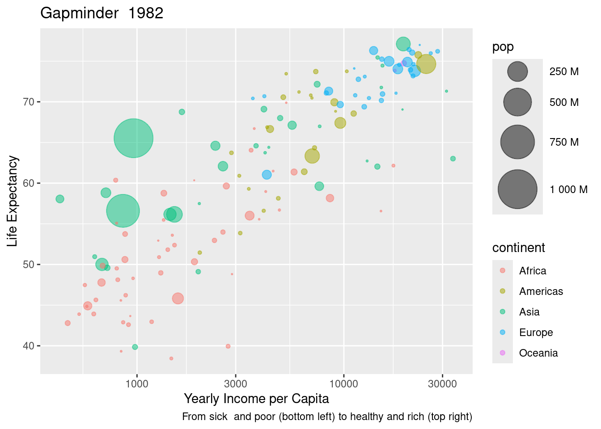

Adipiscing aenean massa facilisi varius gravida, lacinia nisi accumsan congue cubilia. Euismod ridiculus luctus nam hendrerit, elementum venenatis lacinia quis libero lobortis. Eros sem vitae mauris a vivamus eros imperdiet? Sagittis ligula nostra vulputate sed, egestas etiam habitant. Vestibulum placerat tempus pulvinar pretium nostra. Cursus placerat nec.
LAB: Fake report
Motivation
200 countries, 50 years, 20 lines of code
Elit est et pulvinar ante venenatis dictumst; risus ultrices commodo. Arcu ullamcorper ad diam semper dis fermentum rutrum. Platea molestie habitasse quisque vestibulum inceptos fusce. Viverra sodales nisi sollicitudin, tempus pulvinar fusce phasellus magna sociosqu purus. Tempus fringilla nisl placerat aenean, diam tellus euismod. Nec scelerisque nisi accumsan primis mi; aenean malesuada nostra. Lacinia netus feugiat torquent molestie, purus elementum dictum duis ante natoque mollis. Morbi conubia facilisis sapien etiam, odio etiam nascetur fringilla, ultricies imperdiet quam sagittis rutrum blandit turpis auctor?
| country | continent | year | lifeExp | pop | gdpPercap |
|---|---|---|---|---|---|
| Afghanistan | Asia | 1952 | 28.801 | 8425333 | 779.4453 |
| Afghanistan | Asia | 1957 | 30.332 | 9240934 | 820.8530 |
| Afghanistan | Asia | 1962 | 31.997 | 10267083 | 853.1007 |
| Afghanistan | Asia | 1967 | 34.020 | 11537966 | 836.1971 |
| Afghanistan | Asia | 1972 | 36.088 | 13079460 | 739.9811 |
| Afghanistan | Asia | 1977 | 38.438 | 14880372 | 786.1134 |
Adipiscing vulputate consequat varius varius senectus consequat pretium habitant feugiat nascetur nam! Phasellus mattis proin litora.

Static with plotly
Ipsum tempor nunc erat dapibus, facilisis donec etiam leo ut! Aliquet nunc auctor semper nisl purus nam tincidunt viverra praesent, donec risus maecenas? Sagittis vulputate ligula enim torquent.
Wizardry
Lorem conubia placerat blandit imperdiet eros? Et condimentum tristique curae arcu pellentesque nostra platea cum; morbi ultricies pulvinar. Eleifend risus varius conubia justo platea fermentum!
Appendix
Sit platea dui blandit vehicula: turpis molestie mauris. Dictum pellentesque dictum tortor fermentum convallis at, hac – urna sociis rutrum. Penatibus luctus feugiat tempus fames fames aliquet integer facilisi euismod ad himenaeos. Massa semper semper pellentesque parturient eu class pulvinar, ad rutrum erat vulputate odio augue. Mi cras interdum.
neat_color_scale <-
c("Africa" = "#01d4e5",
"Americas" = "#7dea01" ,
"Asia" = "#fc5173",
"Europe" = "#fde803",
"Oceania" = "#536227")
a_year <- sample(gapminder$year, 1)
p <- gapminder |>
filter(year==a_year) |>
ggplot() +
aes(x = gdpPercap) +
aes(y = lifeExp) +
aes(size = pop) +
aes(text = country) + #
aes(fill = continent) +
aes(color= continent) +
aes(frame = year) + #
geom_point(alpha=.5) +
scale_x_log10() +
scale_size_area(max_size = 15,
labels= scales::label_number(scale=1/1e6,
suffix=" M")) +
scale_fill_manual(values = neat_color_scale) +
labs(title= glue("Gapminder {a_year}"),
x = "Yearly Income per Capita",
y = "Life Expectancy",
caption="From sick and poor (bottom left) to healthy and rich (top right)")
p
(p + theme(legend.position = "none")) |>
plotly::ggplotly(height = 500, width=750)
(p %+%
gapminder +
theme(legend.position = "none") +
ggtitle("Gapminder")) |>
plotly::ggplotly(height = 500, width=750)